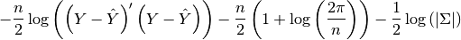

statsmodels.regression.linear_model.GLS.loglike¶
-
GLS.loglike(params)[source]¶ Returns the value of the Gaussian log-likelihood function at params.
Given the whitened design matrix, the log-likelihood is evaluated at the parameter vector params for the dependent variable endog.
Parameters: params : array-like
The parameter estimates
Returns: loglike : float
The value of the log-likelihood function for a GLS Model.
Notes
The log-likelihood function for the normal distribution is

Y and Y-hat are whitened.